Maxime Ryckewaert
Researcher @CIRAD in data analysis, machine learning and A.I. applied to environmental and agricultural contexts
Biography
Research Interests
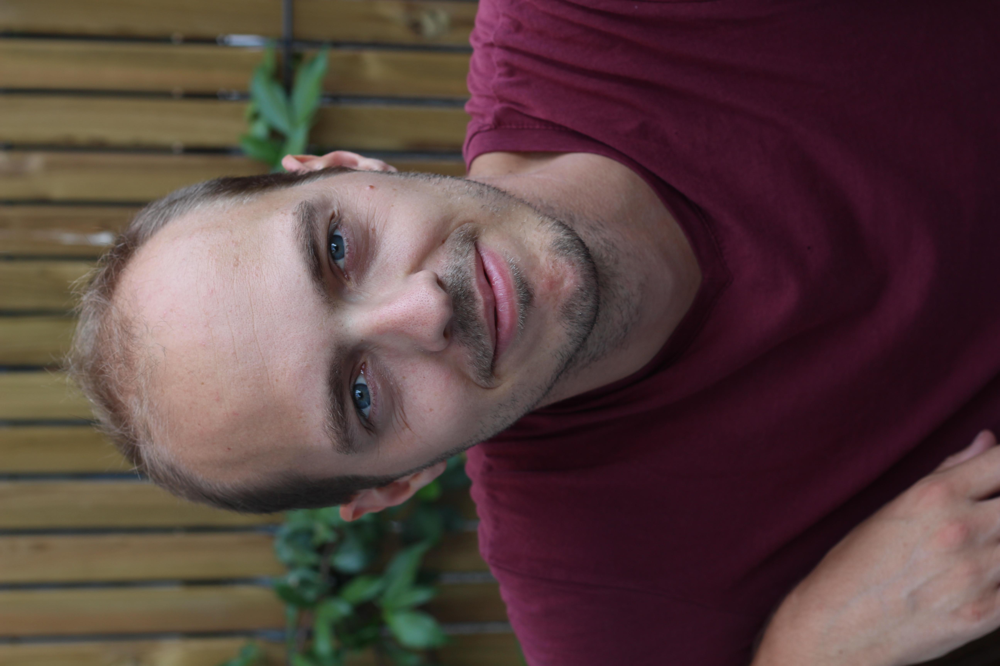
My research focuses on artificial intelligence and machine learning on complex signals including multivariate and multimodal data. I work on methods such as deep learning, data fusion, robust statistics, and functional data analysis to extract meaningful patterns and insights from high-dimensional information. My work covers various application areas including agriculture, environment, biodiversity or ecology. These approaches are applied across diverse domains, particularly in agriculture, environmental monitoring, biodiversity assessment, and ecology, with the goal of supporting sustainable development and informed decision-making. Currently recruited as a Permanent Researcher at Cirad in the Genome and Selection of Perennial Crops team, I am involved in projects related to genomics, phenotyping, and plant breeding for perennial crops such as cocoa, grapevine, oil palm and rubber trees.
A zoom on DeepMaxent
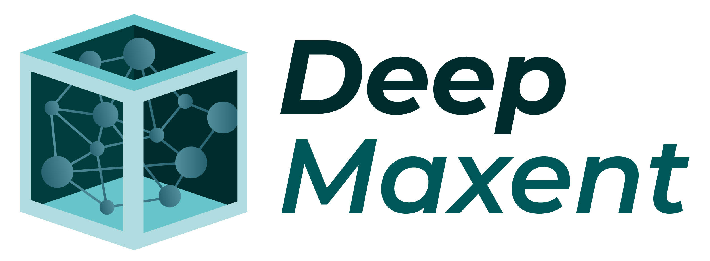
DeepMaxent is a neural network–based method for Species Distribution Modelling (SDM)..
This method combines the maximum entropy principle with deep learning for automatic feature extraction and multi-species modelling.
Go see the submitted paper: DeepMaxent
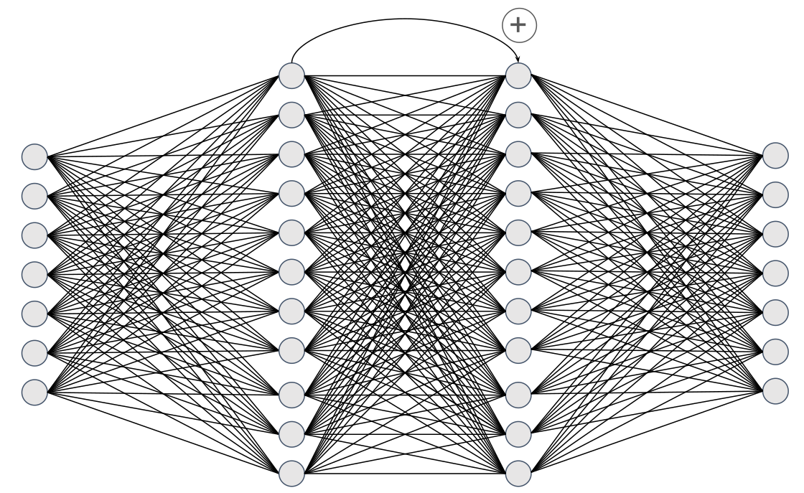
A simple residual neural networks used for SDM
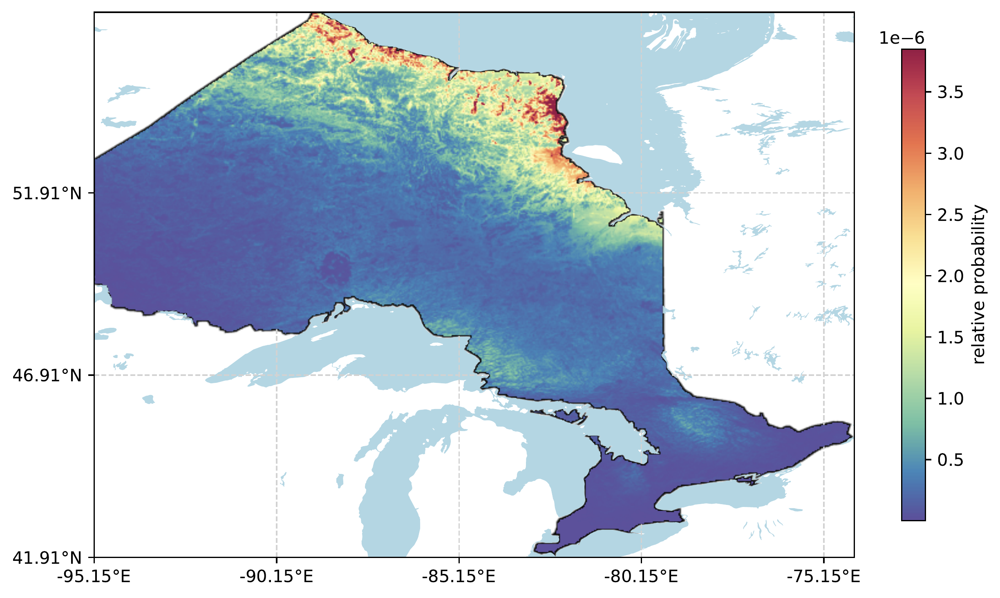
Estimated relative probability of a rare bird species (only few occurrences) in Ontario, Canada, based on a SDM model using deep learning and maximum entropy principle
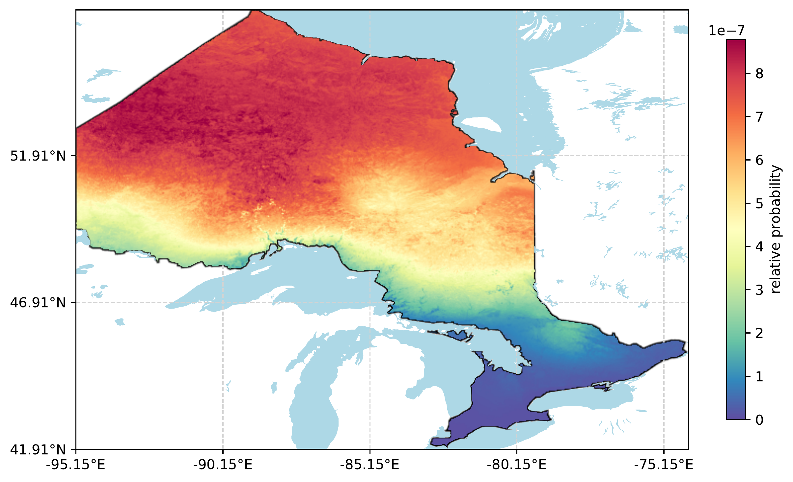
Estimated relative probability of a common bird species in Ontario, Canada, based on the same SDM model as in the previous figure.
A zoom on B-CUBED
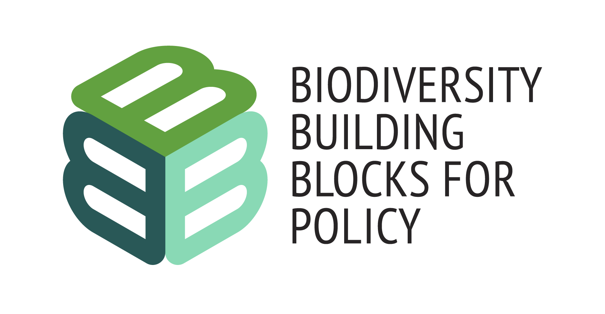
B-CUBED is an European project that aims to standardise biodiversity data in a data cube format to facilitate public policy.
As a researcher at Inria in the Iroko Team, I focused on developing innovative deep learning techniques to mitigate biases in species distribution models. My work specifically targets reducing biases related to heterogeneous sampling efforts in these models, leveraging deep learning to improve accuracy and reliability.
Reducing biases and improving the accuracy of species distribution models are crucial for biodiversity protection and conservation planning, as they lead to more reliable predictions and better-informed decisions for biodiversity management.
Go see details in the website: B-CUBED.eu
Related Urls
- For a list of my publications, please visit my Google Scholar profile.
- Here is my Linkedin page: LinkedIn
Past Postdoctoral Positions
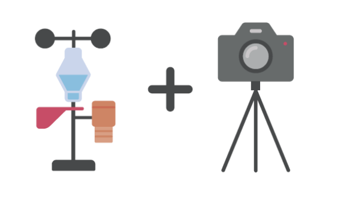
As a postdoctoral researcher at INRAE for three years, I focused on methodological developments. This research covered a wide range of topics, including the analysis of large datasets (Big Data), the development of robust methods, data fusion ir unmixing. During this period, I was also the scientific leader of a working package as part of the VINIOT project. I was able to supervise a series of experiments focusing on key challenges in viticulture, such as monitoring water stress in vines, tracking the maturity of grape berries and detecting flavescence dorée in vine leaves using advanced imaging techniques.
Educations
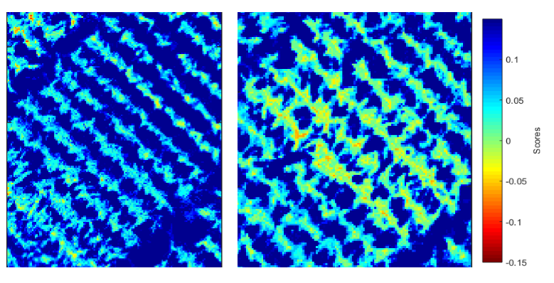
I received my PhD in multivariate statistics from Institut Agro Montpellier in 2019. My thesis focused on developing new methods: a first method to reduce repeatability error in analysis of variance for multivariate data; a second for data fusion, specifically combining data from two different sensors to rebuild a hyperspectral image. These methods were applied to plant breeding for phenotyping, particularly in identifying varieties resistant to water stress.
Related content
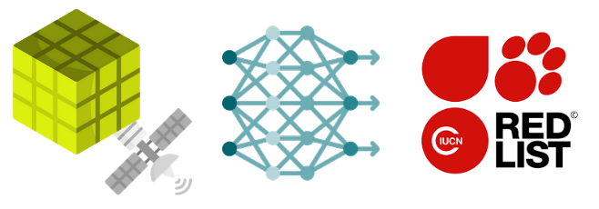
The project Irokube: Critical habitat mapping and modelling enhanced by data cubes’, which they presented, explores the use of biodiversity data cubes, combining them with other data cubes (satellites, bioclimatic variables, etc.), to identify critical habitats. This identification is done using species distribution models based on deep learning (Deep-SDM) and habitat modelling (HDM). To illustrate this approach, a case study was used in Belgium. Hackathon Irokube https://www.umr-tetis.fr/index.php/fr/actualites/b-cubed-hackathon-2024

I had the opportunity to present at WBF 2024 in Davos on the topic of Species Distribution Models (SDMs). My talk, titled 'Disentangling Observation Biases for Species Distribution Modeling,' focused on addressing the challenges posed by the biases inherent in presence-only data from citizen science applications. These biases, resulting from uneven sampling efforts across species and regions, can severely impact the accuracy of SDMs, particularly those based on deep learning. To tackle this, we developed a simulation framework to assess the effectiveness of various point process loss functions in mitigating these biases and improving species distribution predictions.
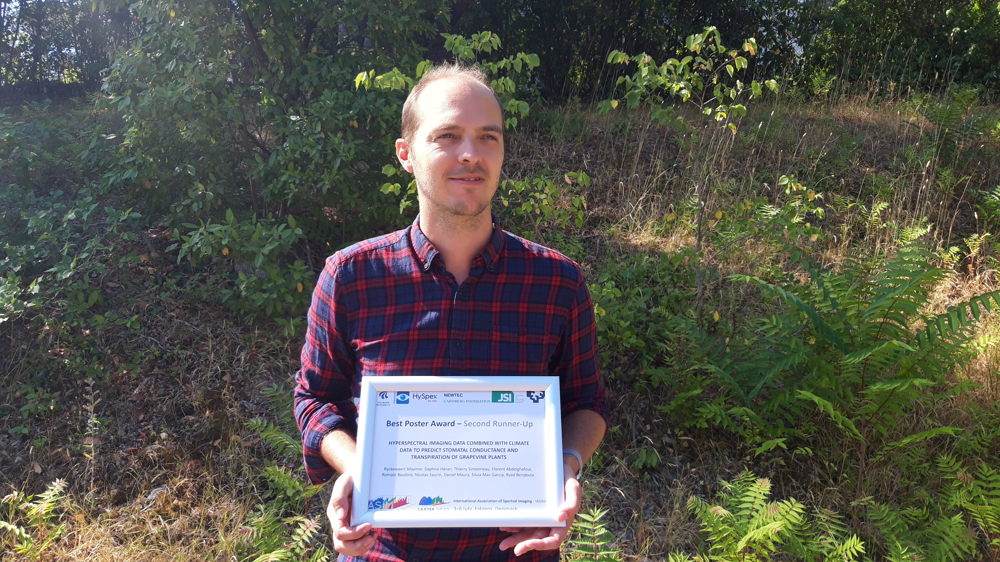
One of the three Best Poster Awards at IASIM 2022, the Conference on Spectral Imaging https://itap-comic.montpellier.hub.inrae.fr/actualites/best-poster-iasim The poster presented research on using hyperspectral imaging data, combined with climate data, to predict stomatal conductance and transpiration in grapevine plants. This conference was particularly fruitful for me, as I also presented a talk as first author on robust statistics for monitoring grape berry maturity. Additionally, I co-authored a study presented at the same conference that focused on minimizing errors caused by temporal data variations in NIRS models for the early detection of early blight in potatoes. I was also a co-author on another poster about detecting grapevine Flavescence Dorée, where we adapted method for classification.
Gallery
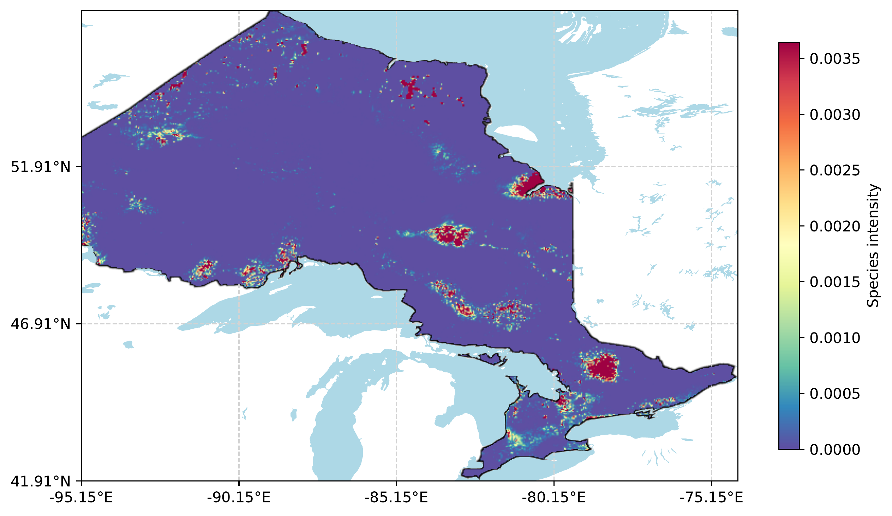
Species distribution without debiasing the data.
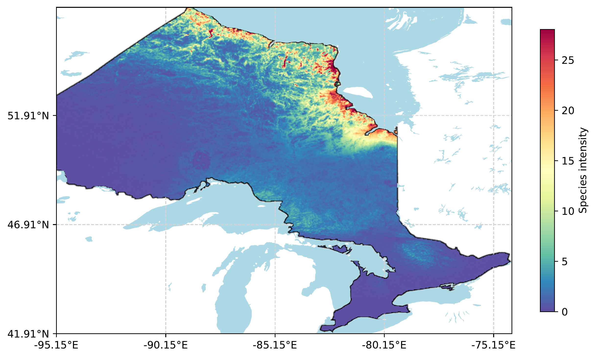
Species distribution after debiasing the sampling effort using a disentangling correction.
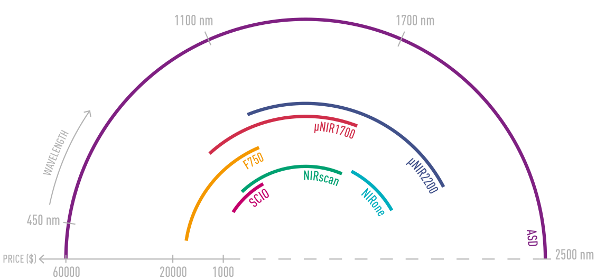
Cost of Micro-spectrometers and spectrometers according to wavelength domain. Source: ...
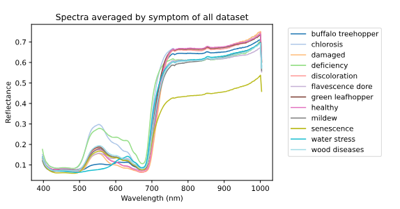
Leaf spectra averaged by symptom. Experiments made during VINIOT Source: ...
Hobbies
Besides my professional work, I am also a passionate musician.
I play guitar in a dynamic trio called Logicorama, and you can listen to our music on SoundCloud.
What makes Logicorama unique is our use of unconventional time signatures, deviating from the typical 4/4 rhythm, while aiming to make these changes feel seamless to the listener.
At the moment, I am contributing exclusively to our upcoming album, Memorabilia.
You can listen to our music on Spotify.
I also produce instrumental chill music under the name DataZombie, blending guitar with electronic music to create atmospheric soundscapes.
My work is available on various platforms, offering a fusion of organic and electronic elements for listeners who enjoy relaxing!
It's great music to stay focus on your work!